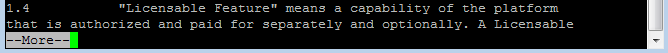
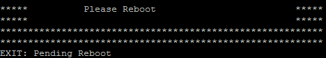
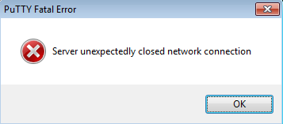
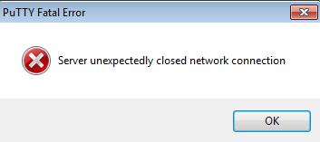
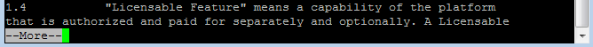
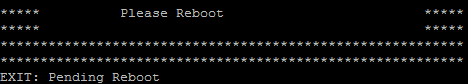
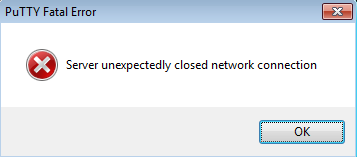
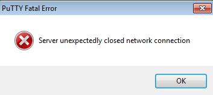

#upgrade ME7000 via ssh session
#inputs: encIP=[] loginId=[] password=[] targetVersion=[]
#Usage: upgrade_via_ssh.sikuli targetVersion=me7k.1.0.1.1
###############################################################
#common code for every sikuli code. Do not remove this section
from me7klib import *
###############################################################
#YOUR code start here
###############################################################
#This is your check for the inputs that you are expecting.
#This is your check for the inputs that you are expecting.
def check_args():
if os.environ.get('encIP') == "":
print "Enc IP is not given."
exit(1)
if os.environ.get('loginID') == "":
print "Ssh loginID is not given. Will use default loginid: root"
os.environ['loginID']='root'
if os.environ.get('password') == "":
print "Ssh password is not given. Will use default password: Arri$2015"
os.environ['password']='Arri$2015'
if os.environ.get('targetVersion') == "":
print "Target version is not given. Will use default version: NeoCCBuild"
os.environ['targetVersion']='NeoCCBuild'
check_args()
#Main code start here
#Any global variables here
program_exit = 0
#first close any opening java client
javaME7000MainTitle = 'ME-7000 - ' + str(Get_arg('encIp')) + ' - ' + str(Get_arg('encGuiLogin'))
mycmd = 'auto_windows_manager.exe windows_title=\"' + javaME7000MainTitle + '\" windows_action=-1'
Run_cmd(mycmd)
login_title = "Please login ME7000"
mycmd = 'auto_windows_manager.exe windows_title=\"' + login_title + '\" windows_action=-1'
Run_cmd(mycmd)
openApp("putty.exe")
wait( , 4)
click()
type(os.environ.get('ENCIP'))
click()
sleep(1)
wait(Pattern().similar(0.90).targetOffset(101,-6), 3); click(Pattern().similar(0.90)); sleep(1)
type(os.environ.get('loginId')); type(Key.ENTER)
type(os.environ.get('password')); type(Key.ENTER)
sleep(1)
type("update"); type(Key.ENTER)
sleep(1)
type("update -s -h " + os.environ.get('updateServer') + " -d /dvs/build/" + os.environ.get('targetVersion')); type(Key.ENTER)
sleep(15)
wait(Pattern().similar(0.90), 10); sleep(1)
type("q"); sleep(1)
type("y"); type(Key.ENTER)
wait(Pattern().similar(0.90), 300)
upgrade_finish = find(Pattern().similar(0.90))
if upgrade_finish:
type("stopfarmer; rm /dataflash/Log/Alarm*; sync; reboot"); type(Key.ENTER)
sleep(4)
type(Key.ENTER)
sleep(1)
if exists(,5): find(); click(); sleep(1)
if exists(Pattern().similar(0.90).targetOffset(101,-6)): click(Pattern().similar(0.90).targetOffset(103,-6)); sleep(1)
sleep(1)
if exists(): click(); sleep(1)
if exists(Pattern().similar(0.90)): click(Pattern().similar(0.90).targetOffset(101,-3)); sleep(1)
waitVanish(Pattern().similar(0.90))
else:
program_exit = 1
exit(program_exit)
, 4)
click()
type(os.environ.get('ENCIP'))
click()
sleep(1)
wait(Pattern().similar(0.90).targetOffset(101,-6), 3); click(Pattern().similar(0.90)); sleep(1)
type(os.environ.get('loginId')); type(Key.ENTER)
type(os.environ.get('password')); type(Key.ENTER)
sleep(1)
type("update"); type(Key.ENTER)
sleep(1)
type("update -s -h " + os.environ.get('updateServer') + " -d /dvs/build/" + os.environ.get('targetVersion')); type(Key.ENTER)
sleep(15)
wait(Pattern().similar(0.90), 10); sleep(1)
type("q"); sleep(1)
type("y"); type(Key.ENTER)
wait(Pattern().similar(0.90), 300)
upgrade_finish = find(Pattern().similar(0.90))
if upgrade_finish:
type("stopfarmer; rm /dataflash/Log/Alarm*; sync; reboot"); type(Key.ENTER)
sleep(4)
type(Key.ENTER)
sleep(1)
if exists(,5): find(); click(); sleep(1)
if exists(Pattern().similar(0.90).targetOffset(101,-6)): click(Pattern().similar(0.90).targetOffset(103,-6)); sleep(1)
sleep(1)
if exists(): click(); sleep(1)
if exists(Pattern().similar(0.90)): click(Pattern().similar(0.90).targetOffset(101,-3)); sleep(1)
waitVanish(Pattern().similar(0.90))
else:
program_exit = 1
exit(program_exit)